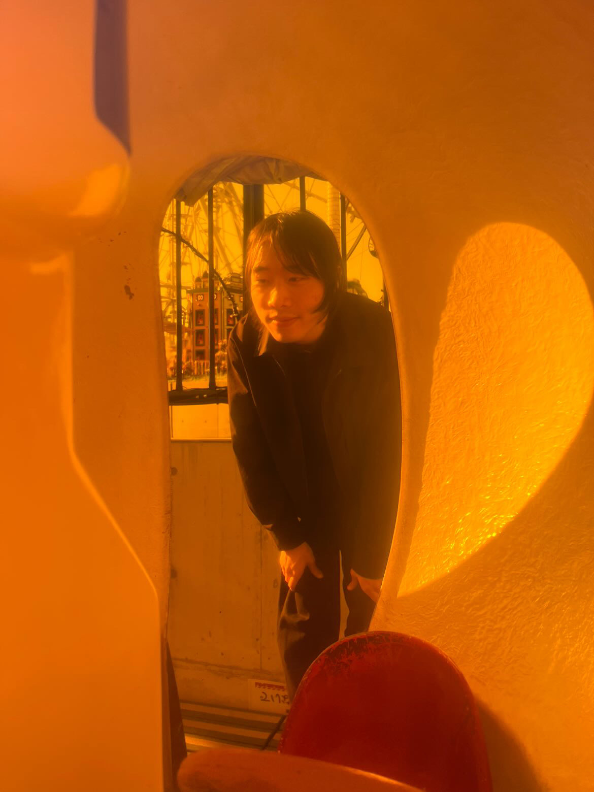

学生の声

- 名前:
- リー・ジャミン
- 国籍:
- 中国
- 在学年:
- 1年生
個人の背景と将来の目標
- 将来はどんな仕事をしたいと思っていますか。
- Webデザイナーになれば嬉しいです。
- その夢に向かって、この学校はどのようにサポートしてくれていますか。
- 日本で就職に必要な知識を日頃教えてくれています。
自己成長と新入生へのアドバイス
- 自分の成長につながった校則や習慣はありますか。
- 未来のことを心配しないで、今に集中する。
- 将来の仕事に役立つと感じた学校で学んだことは何ですか。
- 先輩に接するかた、マナーなど。
- 専門学校のルールで、特に集中力や整理整頓に役立ったものはありますか。
また、それはどのように役立ちましたか。 - 自習室内に食べ物は禁止！いい仕事の習慣になれる。
- 入学当初はできないと思っていたけど、今はできるようになったことはありますか。
- 暫くないです。
- 学校生活に早く慣れるためのコツや、
緊張している新入生に伝えたいアドバイスはありますか。 - 人生にとって珍しい二年間を大事にして、頑張りましょう。